Giới Thiệu Đề Tài
Khai thác và phát huy giá trị sinh học của cây sâm tanh tách (sâm đất) để tạo ra các sản phẩm chăm sóc sức khỏe an toàn, tự nhiên.
Vấn Đề Nghiên Cứu
Sâm tanh tách là cây thân thảo phổ biến ở Việt Nam, chứa nhiều hợp chất sinh học quý như saponin, flavonoid. Mặc dù có tiềm năng lớn trong y học dân gian, việc khai thác và ứng dụng loài cây này vẫn chưa được nghiên cứu chuyên sâu, đặc biệt trong việc tạo ra các sản phẩm chăm sóc sức khỏe hiện đại, an toàn và có nguồn gốc tự nhiên.
Mục Đích Đề Tài
-
Đánh giá hoạt chất: Tìm hiểu và đánh giá các hoạt chất sinh học có trong sâm tanh tách với tác dụng kháng khuẩn, chống viêm.
-
Xây dựng quy trình: Xây dựng quy trình sản xuất trà uống và nước súc miệng từ sâm tanh tách theo hướng tự nhiên, an toàn.
-
Phát triển sản phẩm: Góp phần phát triển sản phẩm xanh, thay thế các sản phẩm chứa hóa chất tổng hợp, hướng đến kinh tế sinh học bền vững.
Phương Pháp Nghiên Cứu
Kế hoạch được thực hiện theo phương pháp thực nghiệm, phân tích kết quả và tối ưu hóa qua từng giai đoạn.
| Giai Đoạn | Nội dung công việc | Thời gian dự kiến |
|---|---|---|
| 1 | Lên ý tưởng và nghiên cứu phương pháp làm trà và nước súc miệng. | 21/09/2025 - 26/10/2025 |
| 2 | Thử nghiệm lần 1 với nhiều tỉ lệ khác nhau trong cùng điều kiện. | 26/10/2025 - 28/10/2025 |
| 3 | Thu thập, phân tích kết quả đợt 1 và tìm ra tỉ lệ tối ưu. | 28/10/2025 - 30/10/2025 |
| 4 | Tiến hành thử nghiệm đợt 2 với tỉ lệ mới đã được tối ưu. | 30/10/2025 - 02/11/2025 |
| 5 | Thu thập, điều chỉnh và hoàn thiện sản phẩm cuối cùng. | 02/11/2025 - 04/11/2025 |
Quy Trình Thực Hiện
Các bước chi tiết để tạo ra sản phẩm từ sâm tanh tách.
Nước Súc Miệng
Chuẩn bị nguyên liệu
Sâm tanh tách, bạc hà, cỏ ngọt, baking soda, cồn thảo dược, muối biển và dầu dừa được lựa chọn kỹ lưỡng.
Rang và Giã
Sơ chế sâm tươi, rang khô trên lửa nhỏ 4-5 phút, sau đó để nguội và giã nhuyễn để giải phóng hoạt chất.
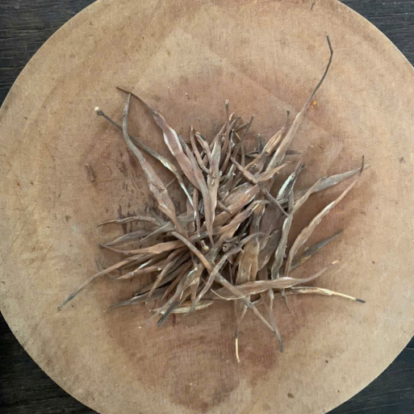Đun Chiết
Cho sâm, lá bạc hà, cỏ ngọt vào đun nhỏ lửa với 250ml nước trong 10-15 phút. Lọc lấy dịch chiết.
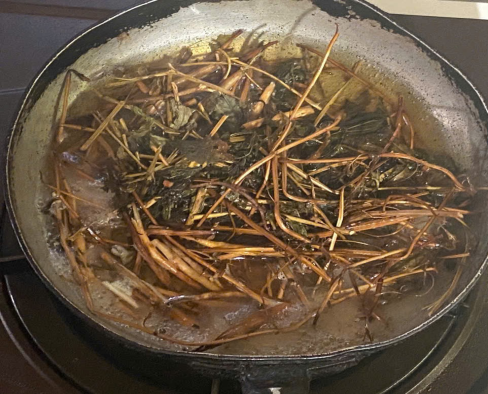 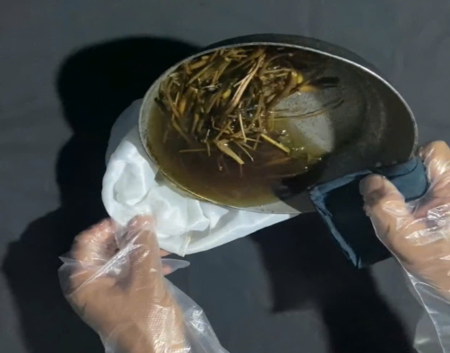Pha Hỗn Hợp
Thêm dầu dừa, baking soda, cồn thảo dược và muối biển vào dịch chiết, khuấy đều cho tan hoàn toàn.
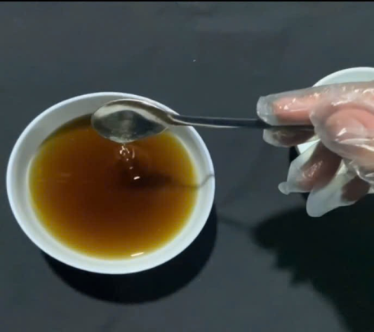 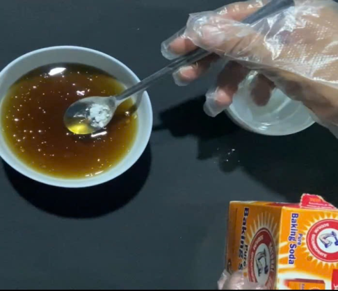 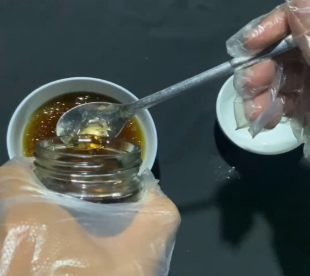 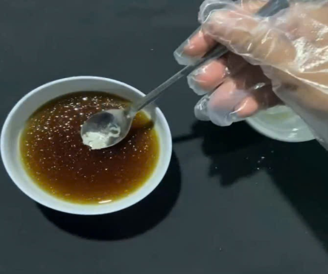Hoàn Thiện
Lọc lại dung dịch để loại bỏ cặn, đóng vào chai thủy tinh tiệt trùng và bảo quản trong ngăn mát tủ lạnh.
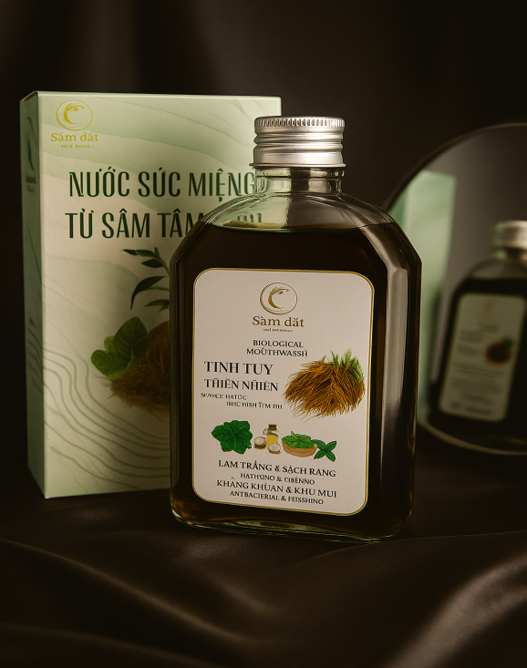Trà Thảo Dược
Chuẩn bị nguyên liệu
Sâm tanh tách, cỏ ngọt, kim tiền thảo, lá mã đề, hoa cúc vàng và rễ cỏ tranh được phơi hoặc sấy khô.
Sơ Chế
Tất cả các nguyên liệu khô được cắt nhỏ để tăng diện tích tiếp xúc và dễ dàng phối trộn theo tỉ lệ.
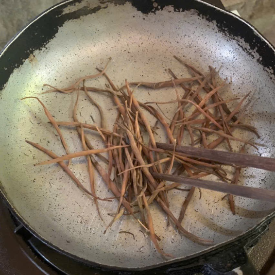 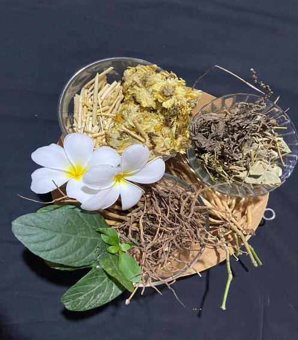Phối Trộn
Trộn đều các nguyên liệu đã thái nhỏ theo tỉ lệ công thức đã được nghiên cứu để đạt hiệu quả tốt nhất.
Hoàn Thiện
Chia hỗn hợp trà đã trộn vào các túi lọc, mỗi túi khoảng 5 gram, sau đó đóng gói để bảo quản.
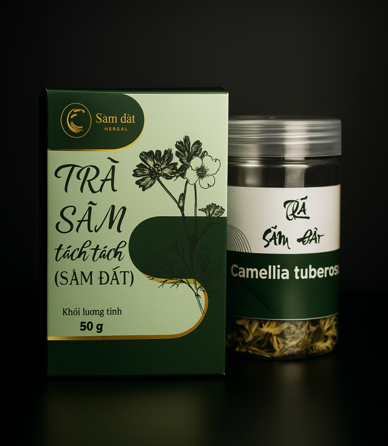Kết Luận & Kết Quả
Sản phẩm hoàn thiện sau quá trình thử nghiệm và tối ưu hóa, chứng minh tính khả thi và hiệu quả của dự án.
Nước Súc Miệng Sinh Học
Sản phẩm cuối cùng có màu vàng cánh gián đẹp mắt, mùi sâm dịu nhẹ, khắc phục hoàn toàn các nhược điểm của thử nghiệm đầu tiên.
- Làm sạch khoang miệng hiệu quả
- Khử mùi hôi, mang lại hơi thở thơm mát
- Kháng khuẩn tự nhiên, ngừa viêm nướu
Trà Thảo Dược
Sản phẩm trà sau khi tối ưu có mùi sâm rõ hơn, tổng thể hài hòa và dễ chịu. Trà phát huy tốt các công dụng vốn có của thảo dược.
- Thanh nhiệt, giải độc, làm mát gan
- Lợi tiểu, hỗ trợ tiêu hóa tốt
- Giảm mụn nhọt, làm dịu cơ thể
Sản Phẩm Hoàn Thiện
Bao bì và hình ảnh thực tế của bộ sản phẩm Sâm Tanh Tách.